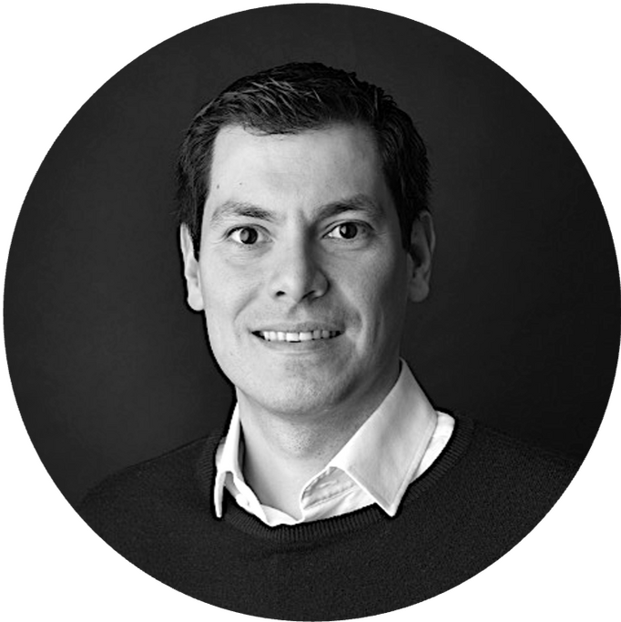

In 2027, be the AI person.
The colleague people ask when they wonder what AI could do for their work. Finish AI Badge Level 1, which is free, then apply for a seat in a small group I guide personally for eight weeks. It opens with a kick-off in person, in Dublin or London.
You can't outcompete digital minds. Partner instead.
On speed, recall and volume, a model already beats most of us, and each release widens the gap. A job holds more than that. Someone chooses the work, knows what was never written down, signs it off, and gets colleagues to trust the change. Hand the model the part it does best and keep the rest on purpose. For eight weeks you practise that on one task from your own job.
The choice
A model answers the question in front of it. You decide which task deserves the week.
The context
Which supplier always ships late, and what "quick" means to your manager. The model knows only what you tell it.
"We can know more than we can tell." Michael Polanyi, 1966The signature
Someone decides what is good enough and answers for it when it goes wrong. That person is you.
The trust
Colleagues take up a new way of working after someone they trust has shown it working nearby.
Opinion leaders, in Everett Rogers' Diffusion of InnovationsThe trade
The model drafts for almost nothing, so your hours go to the work only you can do. You measure the difference.
Partner with the best digital minds there are
You work beside Anthropic's Claude models on a task from your own job. These are the models I build with every day. If a newer one ships before your group starts, you use that one.
Opus 5.5
For the long, careful work: reading your real files, drafting, checking against your rule sheet.
Fable 5.1
The second mind at the table: another model to compare against, so you learn to judge an answer and stop simply accepting it.
The question comes to you
By March the conversation about AI in your team has a name in it, and the name is yours.
PROOF 01/03
10 benefits of being the AI person
Each one is something you can do or show by week eight. I promise the work and my attention. Pay rises and promotions are your employer's to give, so you will find none promised here.
People bring you the question first
When a colleague wonders whether AI could do something, you are the one they ask.
You know what you saved
You time one weekly task before and after, so the number is yours and it is real.
You speak with evidence
When your team decides what to do about AI, you bring a working example from your own job.
You know where AI must stay out
You write the rule sheet: what it never touches, and what a person checks every time.
You can hand it over
A colleague runs your workflow without you. That is the test of whether you understand it.
Proof anyone can check
A verifiable Level 1 certificate, plus a one-page before and after of your own work.
New tools stop being noise
You know what to test, so you can judge a new AI tool in an afternoon.
A specific story to tell
For a review or an interview: the task you changed, how you did it, and what you measured.
Peers doing the same
A small group in other workplaces, working through the same eight weeks alongside you.
My eyes on your work
I read what you make every week and tell you plainly what I would change.
Three steps, and the first is free
Finish Level 1
Self-paced and free. It ends in a certificate with an ID anyone can verify.
Apply with your certificate
Four short questions: your certificate, the weekly task you want to change, the colleague who will try it, whether the weekly slot suits you, and which city's kick-off you will attend: Dublin or London.
Eight weeks with me
It opens with a kick-off in person in Dublin or London, then one live session a week online. I review your work between sessions. Entry is [price].
Two cities, one kick-off each
Each group starts in a room with me. Dublin goes first in late February 2027, and London follows two weeks later. After the kick-off, both groups run the same eight weeks in parallel, with one live session a week online.
Dublin
- Kick-off
- Late February 2027 · [Dublin date]
- Venue
- WeWork Dublin Landings, near the PointTo confirm
- Seats
- [Dublin seats], in a room for up to 12
- Entry
- [price], after the free Level 1
London
- Kick-off
- Two weeks after Dublin · [London date]
- Venue
- [London venue]To confirm
- Seats
- [London seats]
- Entry
- [price], after the free Level 1
One task from your job, changed for good
- WEEK 1 · IN PERSONKick-off in Dublin or London. Pick one recurring task and time it the way you do it today.You keep the choice
- WEEK 2Do it with AI by hand on this week's real work. Keep the prompt and the output.
- WEEK 3Use your real files and deliver the result to whoever normally receives it.You keep the context
- WEEK 4Write your rule sheet: what AI must not touch and what you check.You keep the signature
- WEEK 5Turn it into a saved workflow with instructions a stranger could follow.
- WEEK 6A colleague runs it alone. You log what broke.You keep the trust
- WEEK 7Fix it and write your one-page before and after.You keep the trade
- WEEK 8Demo to the group, then show your team at work.
Where it stands
Real counts only. A tile stays blank until there is a true number to put in it.

Victor del Rosal
I lecture at National College of Ireland and I built AI Badge. I keep this group small so that I can read every person's work each week.
You become the AI person through work your colleagues can see. We start in the same room, and I stay beside you for the eight weeks while you do it.
Before you start
What does it cost?
Level 1 is free. The eight weeks, kick-off included, cost [price].
Do I need to code?
No. This group stays out of the terminal and works on a task from your own job.
What if I miss a week?
The weekly online sessions are recorded. Watch the one you missed and post that week's piece of work within seven days. The kick-off is the one session I ask everyone to attend in person.
Can I join the kick-off online?
No. The kick-off happens in a room in Dublin or London, because that is where the group meets and you start your task with me beside you. Pick the city you can reach.
Why must I finish Level 1 first?
It gives the whole group the same starting point, and it shows me you finish what you start.
How are seats decided?
You need a verified Level 1 certificate, a specific task, a named colleague, the weekly slot free and a city you can reach for the kick-off. Applicants who meet all five are seated in the order they applied.